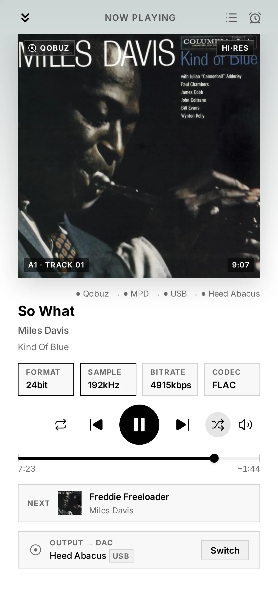
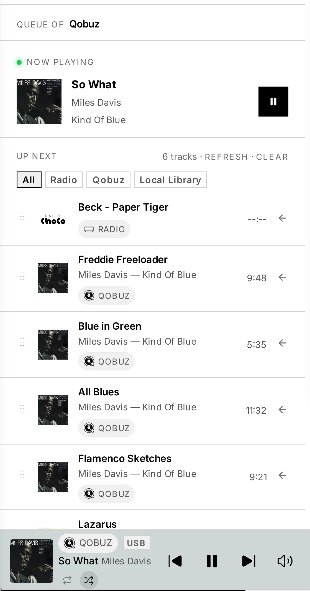
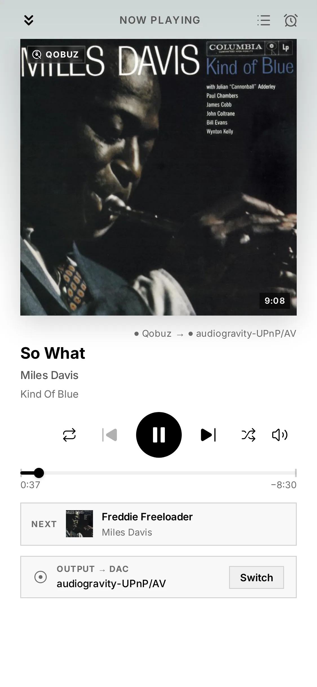

4. Listening
Once your box is set up, playing music is the same whatever the source — local files, Qobuz, Tidal, HIGHRESAUDIO, internet radio or a UPnP server all flow through one set of controls.
The Now Playing bar
A sticky Now Playing bar sits above the footer and shows all active audio sources at once, with quick transport — play/pause, next, and volume. Tap it (or swipe up on mobile / the expand button on desktop) to open the fullscreen player.
The fullscreen player
- Cover art with a dynamic background derived from it, a seekable progress bar, and full transport: repeat · previous · play/pause · next · shuffle.
- Album details — Album, Artist, Format, Genre, Year, Position, Source and the full Tracklist.
- A Queue view for what's coming up (see below).
- Swipe between active sources; close with the back button or swipe-down.
- When playing to a network renderer, a "Routed to UPnP renderer" indicator makes the destination clear.
Controls tell you the truth. Audiogravity waits for the player's answer before showing a command as done. If the player refuses one, the control returns to its real state rather than showing a change that never happened — a play/pause icon that flips back, or a volume slider that glides back to where it was, means the command was declined, not that your tap was missed. The commonest reason is an output with no volume control of its own. Queue actions say it in words, carrying the player's own reason. Jumping in a track is declined in three cases: a live radio stream has no end to jump to; the first seconds of a Tidal track's first listen, while its seekable copy is still arriving (wait a moment and try again); and a second jump asked for while the first is still being applied. See 9. Troubleshooting.

The Queue
The Queue view shows the current track and what's coming up — for every source, including Qobuz, Tidal and HIGHRESAUDIO albums, with their real titles and artists (they survive a restart of the box, too).

- The header names the actual source — playing internet radio reads "Radio" and shows the station's logo, not the underlying playback engine. The same holds when you cast to a network speaker: the badge names where the music comes from (Qobuz, Library, your media server's name), and the speaker appears as the output — because it is the destination, not the source.
- A badge reading External means the music was not started from Audiogravity — someone is driving your speaker, or HQPlayer, from another app or its own remote. Audiogravity shows what it can see and stays out of the way.
- When the queue mixes sources — say a radio station followed by a Qobuz album — each upcoming track carries a small source badge telling you where it comes from, and a filter bar lets you view one source at a time. Filtering only changes what you see: nothing moves or stops playing, and the current track always stays in view.
- Remove an upcoming track with its Remove button or a left-swipe — the same gesture used across the app's lists. It always removes the track you swiped, even if the queue has reordered meanwhile. Clear empties the queue, and respects the active filter.

The live hi-fi readout
On every track change, Audiogravity shows exactly what's reaching your DAC:
- Format (PCM / DSD), sample rate, bit depth, and instantaneous bitrate.
This is your at-a-glance confirmation that a Hi-Res track really is playing at its native resolution. A DSD lock indicator appears for DSD streams.
The stream-origin badge
A badge in the Now Playing bar always tells you where the audio is coming from — Tidal, Qobuz, HIGHRESAUDIO, your UPnP server (by name), a radio station, a local file, or AirPlay. No guessing which source is live.
Profiles — switch whole chains in one tap
A profile is a saved scenario for your audio system. Switching one automatically starts the services it needs and stops the conflicting ones, so the chain is always coherent and bit-perfect. Typical profiles: Roon + HQPlayer for serious listening, MPD + upmpdcli to expose the box as a UPnP renderer, AirPlay only for background music.
Each profile tile shows the services it starts/stops, the resolved output port (e.g.
usb, toslink), a live health bar (active / failed / idle), and when it was
last activated. Activation is atomic, with a detailed toast on failure.
Sleep timer
A built-in sleep timer pauses playback after a set duration — for falling asleep to music without leaving the system running all night.
Portrait lock
On phones and tablets, Audiogravity stays in portrait by default. A Portrait Lock switch in Settings (the gear in the top bar) turns it off if you prefer landscape — and on a device you can't rotate, the Continue in landscape button on the rotate screen lets you carry on (it switches the lock off for you). Desktop installs are unaffected.
Where the audio goes
The output line at the bottom of the fullscreen player always names your destination — your DAC or the speaker you selected — even when nothing is playing, and marks it Stopped when it sits idle or Unreachable when it cannot be contacted. Any reason the sound is not coming out appears on that same line.
Choosing where music plays — your local DAC, a network renderer, HQPlayer or AirPlay — is covered in 6. Outputs & engines. Connecting streaming services and browsing your library is in 5. Library & streaming.